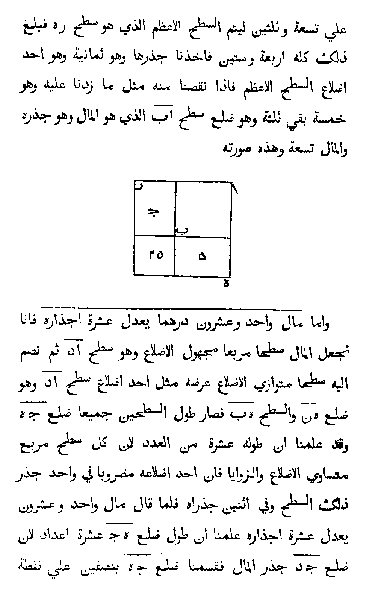
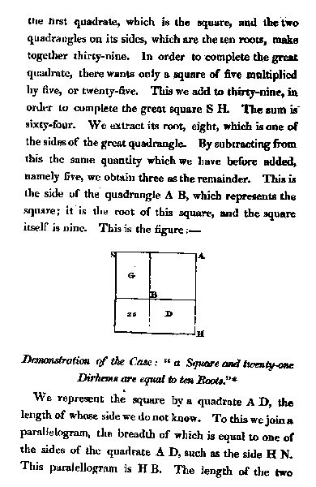

The Father of Algebra who triggered 3rd Industrial Revolution - AI


Left: The original Arabic print manuscript of the Book of Algebra by Al-Khwārizmī. Right: A page from The Algebra of Al-Khwarizmi by Fredrick Rosen, in English.
Here's a brief look at al-Khwarizmi's life:
The Persian mathematician Muhammad Al-Khwarizmi (محمد بن موسى الخوارزمي, 780 – 850) lived during the golden age of the Muslim Abbasid regime in Baghdad. He worked at the “House of Wisdom”, which contained the first large collection of academic books since the destruction of the Library of Alexandria.
Al-Khwarizmi has been called the “Father of algebra” – in fact, the word algebra comes from the Arabic title of his most important book: “The Compendious Book on Calculation by Completion and Balancing”. In it, he showed how to solve linear and quadratic equations, and for many centuries, it was the main mathematics textbook at European universities.
Al-Khwarizmi also worked in astronomy and geography, and the word “algorithm” is named after him.
Muhammad ibn Musa al-Khwarizmi's greatest contribution to the Islamic golden age was his work in mathematics.
A Muslim scholar is a man who is not a specialist in any branch of knowledge but is universal in his outlook and is authoritative in several branches of related knowledge
Syed Muhammad Naquib al-Attas
If you have time, you should read more about this incredible human being here